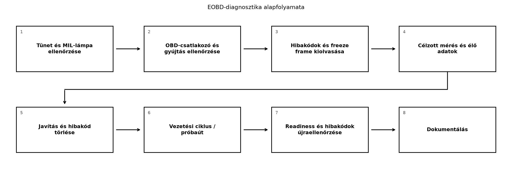

Egy Otto-motoros autó műszerfalán menet közben sárga, motorszimbólummal ellátott lámpa gyullad ki: a MIL (Malfunction Indicator Lamp), köznyelven „motordiagnosztikai lámpa”. Az ügyfél azt kérdezi: „Miért világít, és muszáj-e azonnal megállni?” A mai járművekben ilyenkor a motorvezérlő memóriájában általában már egy hibakód (DTC – Diagnostic Trouble Code) és egy befagyasztott mérési pillanatkép, az úgynevezett freeze frame található. Az autószerelő feladata nem az, hogy csak „lehúzza” a hibakódot és törölje, hanem az, hogy az EOBD/OBD-rendszer adataiból célzott diagnózist állítson fel, megjavítsa a tényleges okot, majd ellenőrizze, hogy a fedélzeti tesztek ismét lefutottak-e. Ebben az alfejezetben megtanulod, hogyan olvasod ki és értelmezed ezeket az adatokat, és miért nem elég a hibakód-törlés a vizsga előtt.
Képzeld el a következő műhelyi helyzetet. A szerelő az OBD-csatlakozót keresi a kormánykerék alatt, a bal oldali térdszintnél, egy 16 pólusú, trapéz formájú, fekete diagnosztikai aljzatban (SAE J1962 szerinti elrendezés, hazánkban is így alkalmazzák; az elhelyezés járműtípusonként kissé eltérhet – ellenőrizendő a gyártói kézikönyvben). A csatlakozó 4. és 5. érintkezője általában test, a 16. akkumulátorfeszültség, a 6. és 14. a CAN-busz, a 7. és 15. a K-vonal, illetve L-vonal a régebbi protokolloknál. A rendszertesztert csatlakoztatva a készülék először a beépített akkumulátorról kap tápfeszültséget, majd felismeri a járműben használt kommunikációs protokollt, és az ECU-val felvett kapcsolat után kiolvassa a hibakódokat. A diagnosztikai rendszer így egy ablakot nyit a motorvezérlő belső méréseire, amelyeket a szerelő műszer nélkül nem látna.

Definíció. Az OBD (On-Board Diagnostics) a jármű fedélzeti diagnosztikai rendszere, amely a motor és a kipufogógáz-utókezelő rendszerek működését figyeli, hibákat tárol, és a műszerfali MIL-lámpán keresztül jelzi az emissziót befolyásoló rendellenességeket. Az EOBD (European On-Board Diagnostics) ennek Európában érvényes, a hatályos uniós és ENSZ-EGB előírásokkal harmonizált változata (ellenőrizendő: az adott járműkategóriára érvényes EOBD-előírás száma és a bevezetés időpontjai).
Definíció. A DTC (hibakód) egy
betűkből és számjegyekből álló, szabványos felépítésű kód, amely a hibás
rendszerre, a hiba jellegére és a konkrét alkatrészre utal. Például
P0420 jelenti a katalizátorrendszer hatásfokának
csökkenését az 1. hengersoron; a kód nem mondja meg,
hogy a katalizátor vagy a mögötte lévő lambdaszonda hibás-e, csak a
tünetcsoportot azonosítja.
Definíció. A freeze frame (befagyasztott keret) olyan, a hibakód eltárolásának pillanatában rögzített mérési adatcsomag, amely tartalmazza a fordulatszámot, hűtőfolyadék-hőmérsékletet, járműsebességet, légtömegáramot, motorterhelést és más releváns paramétereket. Ez a pillanatkép segít reprodukálni a hiba létrejöttének körülményeit.
Definíció. A readiness (készenléti állapotjelző) azt mutatja, hogy a jármű fedélzeti diagnosztikai tesztjei az adott gyújtási ciklus vagy az utolsó törlés óta teljes ciklusban lefutottak-e. Ha egy teszt „nem kész”, a jármű még nem alkalmas hatósági emissziómérésre, mert a rendszer esetleg elrejthet hibát.
Összefüggés. Az EOBD célja, hogy a kipufogógáz határértékek betartását folyamatosan ellenőrizze. A fedélzeti felügyelet két fő csoportra oszlik: állandó (folyamatos) és időszakos (nem folyamatos) ellenőrzésekre. Az állandó felügyeletű rendszerek – égéskimaradás, tüzelőanyag-ellátás, lambdaszabályozás egyes részei – minden motorfordulatnál dolgoznak; ha hibát észlelnek, a MIL-lámpa azonnal kigyulladhat. Az időszakos felügyeletű rendszerek – katalizátorhatásfok, EGR, szekunderlevegő, párolgási emisszió (EVAP) – csak meghatározott üzemállapotokban (pl. meleg motoron, részterhelésen) futtatják le a tesztjeiket, ezért a readiness csak a megfelelő feltételek teljesülése után válik „kész” értékűvé.
A motorvezérlő minden égésütemnél kiértékeli a főtengely-jeladó fordulatszámjelét. A hengerenkénti fordulatszám-ingadozásból már korai stádiumban felismeri az égéskimaradást (misfire). Ha a kimaradás olyan gyakoriságú, hogy a katalizátor túlmelegedne vagy a HC-kibocsátás megnőne, az ECU MIL-lámpát kapcsol, és P0300–P0304 jellegű hibakódot tárol. A katalizátor-felügyelet a katalizátor utáni lambdaszonda jelének amplitúdóját hasonlítja az első szonda jeléhez. A jó katalizátor oxigéntároló képessége miatt a második szonda jele lassú, kis amplitúdójú hullámzást mutat; ha a katalizátor kiöregedett, a második szonda is gyors, nagy amplitúdójú váltakozást produkál, ami P0420/P0430 hibakódhoz vezet. A lambdaszonda-felügyelet a szonda fűtését, belső ellenállását, feszültségtartományát és váltási frekvenciáját ellenőrzi (P0130–P0167 tartomány). Az EGR-felügyelet a visszavezetett kipufogógáz mennyiségének hatását értékeli, például a szívócső-nyomás vagy a légtömeg jel megváltozásából. A szekunderlevegő-rendszer felügyelete a hidegindítás utáni lambda-jel gyors szegényedését vizsgálja, amikor a levegőpumpa friss levegőt juttat a kipufogóoldalra. Az EVAP-felügyelet a tartályszellőztető rendszer tömítettségét és a szelepek működését ellenőrzi nyomásváltozás vagy vákuumfenntartás alapján.
Megjegyzés. A dízelmotoroknál a fedélzeti felügyelet a befecskendezési mennyiségeket, a légtömegmérőt, a töltőnyomás-szabályozást és a részecskeszűrő ellennyomását is figyeli; a dízelspecifikus felügyelet kódjai is a szabványos P0/P2 tartományban vannak (pl. P0087, P0401, P2002 – ellenőrizendő), emellett gyártóspecifikus (P1…) kódok is előfordulnak.
A csatlakozó 16 pólusú, trapéz kialakítású (SAE J1962 / ISO 15031 szerint, hazánkban is ez a szabványos szerelői csatlakozó). Elhelyezkedése a jármű utasterében, a vezetőoldalon, általában a kormányoszlop és a bal ajtó közötti műszerfalrész alatt van, de típusonként eltérhet (ellenőrizendő a gyártói dokumentációban). A rendszerteszter a csatlakozó 4. és 5. érintkezőjéről kap testet, a 16. érintkezőről akkumulátorfeszültséget; a kommunikáció gyakran a 6. (CAN-H) és 14. (CAN-L) érintkezőn zajlik. Régebbi járműveken a 7. érintkező a K-vonal (ISO 9141/14230), a 15. az L-vonal, esetleg a 2. és 10. a SAE J1850 PWM/VPW. A mai járművek többsége ISO 15765-4 CAN protokollt használ, 11 bites azonosítóval, 500 kbit/s sebességgel.
Az ábrán az aljzat elölnézete látható: a felső sorban az 1–8., az alsóban a 9–16. érintkező; sötéttel a szabványos funkciójú érintkezők (4 járműtest, 5 jeltest, 6 CAN-H, 14 CAN-L, 7 K-vonal, 15 L-vonal, 16 akkumulátor-plusz, 2 és 10 SAE J1850), fehérrel a gyártófüggők. A gyakorlati útmutató mérései ezekre épülnek: a 16. és a 4. érintkező között akkumulátorfeszültség, gyújtás kikapcsolt állapotában a 6. és a 14. között kb. mérhető (ellenőrizendő).
Előírás. Az EOBD diagnosztikai csatlakozójának kialakítását és hibatárolási elveit uniós rendeletek és a kapcsolódó ENSZ-EGB előírások tartalmazzák (ellenőrizendő: az adott járműre érvényes kibocsátási és EOBD-előírásszámok, például a könnyű személygépkocsikra vonatkozó hatályos Euro-előírás). A kódok felépítése az ISO 15031-6 szabvány szerinti, a kommunikáció az ISO 15765-4 szerinti (ellenőrizendő a legfrissebb kiadás száma).
A rendszerteszter OBD-szolgáltatásokat hív le. A legismertebb szolgáltatási módok (Mode) a következők:
| Szolgáltatás (Mode) | Megnevezés | Mit kapunk? |
|---|---|---|
| Mode 01 | Aktuális adatlekérés | élő adatok: fordulatszám, λ, hűtővíz-hőmérséklet, járműsebesség, terhelés |
| Mode 02 | Freeze frame lekérés | a hibatárolás pillanatában rögzített paraméterek |
| Mode 03 | Hibakódok kiolvasása | tárolt DTC-k listája |
| Mode 04 | Hibakódok törlése | DTC-k, freeze frame és readiness visszaállítása |
| Mode 05 | Oxigénszenzor teszt | szonda-teszteredmények (egyes járműveken) |
| Mode 06 | Nem folyamatos tesztek | az egyes felügyelt rendszerek belső tesztértékei és küszöbértékei |
| Mode 07 | Függőben lévő hibakódok | olyan hibák, amelyek még nem erősítették meg a MIL bekapcsolást |
| Mode 09 | Járműinformációk | VIN, szoftver-azonosítók, kalibrációs adatok |
Az értékek tanulási példák (ellenőrizendő: járműspecifikus protokoll és módok).
Szabály. Az EOBD-hibakódok egy betűből és
négy számjegyből állnak, például P0420. A betű a
rendszerkört mutatja: - P – hajtáslánc (Powertrain): motor
és váltó, - B – karosszéria (Body), - C –
futómű (Chassis), - U – hálózati kommunikáció
(Network).
A második karakter a kód szabványosságát vagy rendeltetését jelzi:
0 szabványos emissziós kód, 1
gyártóspecifikus, 2 szabványos, de gyártói kiegészítés,
3 gyártóspecifikus/ott használt. A harmadik karakter a
hibás alrendszert azonosítja, például P01xx a levegő- és
üzemanyag-bevitel, P02xx a befecskendező rendszer,
P03xx az égéskimaradás, P04xx a
kipufogógáz-utókezelés. Az utolsó két karakter a hiba pontosabb helyét
adja meg.
Példa. A P0302 kód feloldása:
P hajtáslánc, 0 szabványos, 3
égésrendszer, 02 a 2. henger égéskimaradása. A
P0420 esetén pedig P hajtáslánc,
0 szabványos, 4 utókezelés, 20
katalizátor-hatásfok az 1. hengersoron.
A MIL-lámpa többféle üzemmódban világíthat: - folyamatosan ég: megerősített, emissziószempontból kritikus hiba (pl. égéskimaradás, katalizátorhatásfok), - villog: súlyos égéskimaradás, amely katalizátor-károsodást okozhat – ilyenkor azonnal csökkenteni kell a terhelést, és lehetőleg leállítani a motort, - nem világít, de kód tárolva van: a hiba már előfordult, de a felügyeleti teszt még nem erősítette meg újra, vagy a hiba nem igényel MIL-t.
A readiness bitek megmutatják, hogy az egyes felügyelt rendszerek tesztjei elvégezték-e a teljes diagnosztikai ciklust. Ha akkumulátorlekötés vagy hibakód-törlés történt, a readiness bitek törlődnek, és a járművet előbb járműspecifikus vezetési ciklusnak (drive cycle, OBD-ciklus) kell alávetni, hogy a tesztek újra lefussanak. A tipikus ciklus hidegindítással kezdődik, városi gyorsítást-lassítást, országúti szakaszt és alapjáratot tartalmaz; pontos feltételei járműtípusonként eltérnek (ellenőrizendő: gyártói és járműszoftver-adat).
Adott. A rendszerteszter Mode 03-ban a
P0420 hibakódot olvassa ki. A Mode 02 freeze frame adatai:
motorfordulatszám
,
járműsebesség
,
hűtőfolyadék-hőmérséklet
,
légtömegáram
,
motorterhelés
.
Keresett. Mely üzemállapotban keletkezett a hiba, és milyen irányú diagnózist indítasz?
Megoldás. A freeze frame mutatja, hogy a hiba meleg motoron, részterhelésen, országúti sebességnél keletkezett – pontosan abban a tartományban, ahol a katalizátor-hatásfok teszt le szokott futni. A légtömegáram kétliteres szívómotornál közepes terhelésnek felel meg. A diagnózist a katalizátor mögötti oxigénszonda élő jelének, a fűtésének és a katalizátor oxigéntároló képességének irányába indítod: élő adatnál a hátsó szonda jelváltása gyors-e, vagy esetleg az első szonda is ellaposodott. A törlés előtt dokumentáld a freeze frame értékeit, mert a törlés ezeket is törli. ∎
Adott. A járművön akkumulátorcsere után elvégezték a szerelést, majd hibakód törlése történt. A rendszerteszter readiness képernyőjén a katalizátor- és lambdaszonda-felügyelet „nem kész” állapotban van, az égéskimaradás „kész”. A hatósági vizsgálat jövő héten esedékes.
Keresett. Átmehet-e a jármű emissziómérésen, ha a motor jól jár, és nincs hibakód?
Megoldás. Nem feltétlenül, mert a hatósági vizsgálat – az eljárástól függően – kérheti a readiness állapotok ellenőrzését, vagy az EOBD-rendszer által jelzett készültséget. A „nem kész” (incomplete) bitek arra utalnak, hogy a katalizátor- és szondatesztek még nem futottak le, így a vizsgálóállomás elutasíthatja a járművet. El kell végezni a gyártó által előírt vezetési ciklust (pl. hidegindítás, városi szakasz, 80–100 km/h országút, alapjárat), majd újra ellenőrizni a readiness értékeket. Csak akkor szabad a járművet vizsgára vinni, ha minden előírt felügyeleti teszt „kész” állapotú, vagy a vizsgálóállomás az adott ellenőrzéshez elfogadja a rendelkezésre álló ready-s biteket. ∎
Ellenőrzőlista a diagnosztikai munka előtt és közben:
Egy 2012-es benzinmotoros jármű ügyfele szerint a MIL-lámpa kétszer
is kigyulladt, de a lámpa idővel kialudt. A szerelő a Mode 03-ban a
P0420 kódot és a freeze frame-et találja; a Mode 07 szerint
nincs függőben lévő kód. Az élő adatoknál az első lambdaszonda szép
szinuszos jelváltást mutat, a katalizátor mögötti szonda azonban szinte
ugyanolyan gyorsan vált, mint az első, és az amplitúdó is magas. A
szerelő a kipufogórendszeren repedést vagy tömítetlenséget keres, mert
az alacsony katalizátorhatásfoknak lehet mechanikai oka is: a
katalizátor előtti és utáni csatlakozásnál kipufogószivárgás „hamis”
szegény jelet okozhat. A hővédő lemez eltávolítása után a katalizátor
bemeneti tömítésénél kormos nyomot talál. A csavart a gyártói
nyomatékkal (ellenőrizendő: gyártói adat) utánhúzza, azonban a tömítés
deformálódott, ezért újat szerel be. Javítás után törli a hibakódot,
lefuttatja a katalizátortesztet, majd a readiness bitek „kész” állapotba
kerülnek. A próbaúton már nem jelenik meg hiba.
Biztonsági korlát. A feladat tanműhelyi környezetre, oktató felügyeletére és a gyártói javítási utasítás betartására vonatkozik; a megadott értékek tanulási példák.
Cél. OBD-hibakód kiolvasása, freeze frame elemzése, MIL-lámpa okának feltárása és a javítás utáni readiness ellenőrzése.
Szükséges szerszámok, műszerek: OBD/EOBD rendszerteszter vagy megfelelő diagnosztikai szoftver, multiméter, járműszkennerrel kompatibilis gyári javítási utasítás, védőkesztyű (forró motor környezetéhez).
Munkalépések:
Tipikus hiba. Ne törölj hibakódot a mérési adatok rögzítése nélkül; ne töröld a kódot gyári javítási utasítás nélkül, ha a hiba további diagnosztikát igényel.
Csak a hibakódot törlik, az okot nem javítják. A P0420 kód törlése után a MIL-lámpa egy időre kialszik, de a hiba visszatér, és a jármű emissziós vizsgán megbukhat. Helyes gyakorlat: először az okot kell megtalálni és javítani, majd törölni a kódot.
A freeze frame-et figyelmen kívül hagyják. A kód önmagában nem ad elég információt; a befagyasztott keret megmutatja, milyen körülmények között lépett fel a hiba. A hibakeresés gyakran csak azzal kezdhető, ha tudjuk, hogy hidegen vagy melegen, alapjáraton vagy részterhelésen történt-e.
A readiness biteket összekeverik a hibakódokkal. A hibakód-törlés után a rendszer „kész” állapot nélkül nem feltétlenül vizsgakész; ha a szerelő a műszaki vizsga előtt törli a kódot, a járművön elvégzett OBD-tesztek hiányosnak tűnhetnek. Helyes gyakorlat: a gyártói vezetési ciklust elvégezni.
P0301 kód az 1. henger
égéskimaradását jelzi. Indokold.1. feladat (A) Bontsd fel a P0420 és
P0135 hibakódokat a karakterpozíciók szerint.
2. feladat (A) Sorold fel az EOBD hét fő felügyelt rendszerét (katalizátor, lambdaszonda stb.), és jelöld, melyik állandó, melyik időszakos.
3. feladat (B) A tárolt hibakód P0171 (rendszer túl szegény, 1. hengersor); a rendszerteszter Mode 02 (freeze frame) adatai: , , fojtószelep-állás 55 %, λ = 1,02. Milyen üzemállapotban keletkezett a hiba, és mely okokat vizsgálod?
4. feladat (B) Egy járművön a MIL-lámpa villog. Mit kell tenni, és miért?
5. feladat (C) A P0420 hiba diagnosztikája során a szerelő megméri a katalizátor előtti és mögötti oxigénszonda feszültségét. Az első szonda 0,2 és 0,8 V között vált 1 Hz-cel, a hátsó szonda ugyancsak 0,3 és 0,7 V között vált, de 0,9 Hz-cel. Értékeld a mérést; mi lehet a hiba?
6. feladat (D) Egy jármű a műszaki vizsga előtt áll, a readiness bitek: égéskimaradás „kész”, lambdaszonda „nem kész”, katalizátor „nem kész”, EGR „kész”. Milyen teendő a vizsga előtt?
Önellenőrzés – válaszok
P0301 a P hajtáslánc, 0 szabványos, 3
égésrendszer, 01 az 1. henger kimaradása.1. feladat megoldása. P0420: P
hajtáslánc, 0 szabványos emissziós, 4 kipufogó-utókezelés, 20
katalizátor-hatásfok az 1. hengersoron. P0135: P
hajtáslánc, 0 szabványos, 1 levegő- és üzemanyag-bevitel, 35 a fűtőköri
hiba (ld. gyártói specifikáció).
2. feladat megoldása. Állandó felügyelet: égéskimaradás, tüzelőanyag-ellátás, lambdaszabályozás. Időszakos: katalizátorhatásfok, EGR, szekunderlevegő, EVAP. (A lambdaszabályozás állandó, de a szondaalapú felügyelet egy része időszakos lehet.)
3. feladat megoldása. A 2500 1/min, 110 km/h, 55 %-os fojtószelep-állás országúti, meleg, részterhelésű üzem. A λ 1,02 kissé szegény, ami lehet légtömegmérő szennyezettség, kipufogószivárgás a szonda előtt, vagy EGR hiba; további mérést igényel.
4. feladat megoldása. A villogó MIL súlyos égéskimaradást jelez, ami tönkreteheti a katalizátort. Azonnal csökkenteni kell a terhelést (sebesség vissza, fordulatszám vissza), lehetőleg meg kell állni, és a motort leállítani, majd hibakódot kiolvasni.
5. feladat megoldása. A hátsó szonda gyors váltakozása és magas amplitúdója nagyon hasonlít az első szondáéhoz, ami a katalizátor oxigéntároló képességének elvesztésére utal. Ez lehet kiöregedett katalizátor, de mechanikai szivárgás is okozhatja. A pontos megoldáshoz tömítettségi vizsgálat, kipufogógáz-nyomásmérés és szondavizsgálat szükséges.
6. feladat megoldása. A járművön a lambdaszonda- és katalizátor felügyelet nem kész. El kell végezni a gyártói vezetési ciklust, és utána újra ellenőrizni; ha a bitek továbbra sem készülnek, a hibát meg kell keresni. Nem szabad kódot törölni, hogy a readiness „késznek” tűnjön – ez manipuláció.
Az EOBD a fedélzeti állapotfelügyelet eszköze, amely a kibocsátás
szempontjából kritikus rendszereket folyamatosan vagy időszakosan
ellenőrzi. A hibakódok (DTC-k) szabványos felépítésűek: a
P0420 jellegű kódok rendszert, alrendszert és konkrét hibát
azonosítanak, de a tényleges ok megállapításához további mérések
kellenek. A freeze frame a hibatárolás pillanatának adatait őrzi; ezeket
a rendezett diagnosztikához dokumentálni kell, mielőtt bármit törölnénk.
A MIL-lámpa éghet folyamatosan, villoghat, vagy ki lehet aludva; a
hibatárolás a megerősítési ciklusoktól függ. A readiness bitek azt
mutatják, hogy a felügyeleti tesztek lefutottak-e; hibakód-törlés vagy
akkumulátorlekötés után a gyártói vezetési ciklussal kell újra futtatni
őket. Továbbvitt eredmény. Az itt tanult OBD-hibakódok,
freeze frame és readiness értelmezése közvetlenül szükséges a Rendszerteszter-használat: élő adatok, beavatkozó
teszt, adaptációk, kódolás alfejezetben, ahol a Mode 01/02/06/09
adatokkal dolgozol, valamint a Írásbeli és szóbeli
vizsgafelkészülés: témakör-térkép és mintafeladatok
vizsgafeladataiban. A gyártói javítási utasítás, a járműspecifikus
protokoll és az érvényes EOBD-előírás ismerete minden diagnosztikai
munka alapja.
Forrástípusok: ISO 15031-6 (DTC-definíció), ISO 15765-4 (CAN-alapú OBD-kommunikáció), SAE J1962 (csatlakozó), ENSZ-EGB és EU EOBD-előírások (ellenőrizendő a pontos számok és hatály), gyártói javítási utasítások és OBD-ciklusok (járműspecifikus adatok). Az alfejezetben jelölt értékek (feszültség, mintavételi példák, hibakódok magyarázata) tanulási példák; a konkrét jármű adatait mindig a gyártói dokumentációból kell ellenőrizni.